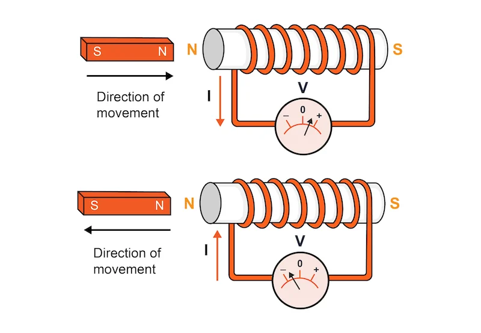

Induced electromotive force (emf) is the voltage generated in a conductor when the magnetic flux through it changes. This is the practical manifestation of Faraday's Law and is the basis for all electromagnetic induction phenomena. Understanding how to calculate and apply induced emf is crucial for analyzing electromagnetic devices and circuits.
The induced emf can be calculated using Faraday's Law and can be generated through various mechanisms including changing magnetic fields, moving conductors, and rotating loops. The magnitude and direction of the induced emf depend on the rate and nature of the flux change.

Calculating Induced EMF
Faraday's Law for Induced EMF
The induced emf is calculated using:
\[ \mathcal{E} = -\frac{d\Phi_B}{dt} \]
For a coil with N turns:
\[ \mathcal{E} = -N\frac{d\Phi_B}{dt} \]
Where:
\(\mathcal{E}\) is the induced emf in volts (V)
\(\Phi_B\) is the magnetic flux in webers (Wb)
\(N\) is the number of turns in the coil
\(\frac{d\Phi_B}{dt}\) is the rate of change of magnetic flux
Methods of Generating Induced EMF
Changing Magnetic Field
When a magnetic field changes in strength while the loop remains stationary:
\[ \mathcal{E} = -A\frac{dB}{dt} \]
This occurs in transformers and solenoids with time-varying currents.
Field strength increases: positive emf
Field strength decreases: negative emf
Constant field: zero emf
Moving Conductor
When a conductor moves through a magnetic field (motional emf):
\[ \mathcal{E} = BLv \]
Where L is the length of the conductor and v is its velocity perpendicular to the field.
Used in generators
Depends on velocity and field strength
Direction given by right-hand rule
Magnetic Force on Moving Rods
When a rod enters a magnetic field, it experiences both induced emf and magnetic force:
\[ F = ILB \]
Where I is the induced current, L is the rod length, and B is the magnetic field strength.
Force opposes the motion (Lenz's Law)
Creates magnetic drag/resistance
Used in eddy current brakes
Requires work to overcome the force
Rotating Loop
When a loop rotates in a magnetic field:
\[ \mathcal{E} = BA\omega\sin(\omega t) \]
This produces alternating current (AC) and is the principle behind AC generators.
Maximum emf when loop is perpendicular to field
Zero emf when loop is parallel to field
Frequency depends on rotation speed
Changing Area
When the area of a loop changes in a constant magnetic field:
\[ \mathcal{E} = -B\frac{dA}{dt} \]
This occurs in expanding or contracting loops and sliding conductors.
Expanding area: negative emf
Contracting area: positive emf
Used in some types of sensors
Watch for better understanding
Interactive EMF Calculator
EMF Calculator
Calculate induced emf for different scenarios.
Result:
Enter parameters and click Calculate
Example Problems
Example 1: Changing Magnetic Field
Problem: A circular loop of radius 0.05 m is placed in a uniform magnetic field. The field increases from 0.2 T to 0.8 T in 0.5 seconds. What is the induced emf?
Problem: A rectangular loop of area 0.01 m² rotates at 120 rad/s in a 0.3 T magnetic field. What is the maximum induced emf?
Solution:
Use rotating loop formula: \(\mathcal{E} = BA\omega\sin(\omega t)\)
Maximum occurs when \(\sin(\omega t) = \pm 1\)
Maximum emf: \(|\mathcal{E}| = BA\omega = (0.3)(0.01)(120)\)
Calculate: \(|\mathcal{E}| = 0.36 \text{ V}\)
Answer: The maximum induced emf is 0.36 V.
Example 4: Magnetic Force on Moving Rod
Problem: A metal rod of length 0.2 m moves at 5 m/s perpendicular to a 0.4 T magnetic field. The rod has resistance 0.1 Ω. What is the magnetic force on the rod?
Result: \(F = \frac{B^2L^2v}{R}\) (NOT on equation sheet)
Applications of Induced EMF
Electric Generators: Convert mechanical energy to electrical energy using rotating coils
Transformers: Transfer electrical energy between circuits using changing magnetic fields
Induction Motors: Use induced currents to create rotational motion
Magnetic Sensors: Detect changes in magnetic fields for various applications
Wireless Charging: Transfer energy without physical contact using induced emf
Eddy Current Brakes: Use induced currents to create braking forces
Quick Quiz: Induced EMF
1. What is the unit of induced emf?
Volts (V)
Amperes (A)
Ohms (Ω)
Tesla (T)
2. For a moving conductor, the induced emf is:
\(\mathcal{E} = BLv\)
\(\mathcal{E} = BAv\)
\(\mathcal{E} = BL/v\)
\(\mathcal{E} = Bv/L\)
3. What happens to induced emf if the rate of flux change triples?
It triples
It stays the same
It becomes one-third
It becomes negative
4. For a rotating loop, the maximum emf occurs when:
The loop is parallel to the field
The loop is perpendicular to the field
The loop is at 45° to the field
The loop is stationary
5. What type of current does a rotating loop in a magnetic field produce?
Direct current (DC)
Alternating current (AC)
No current
Pulsating current
6. When a rod moves through a magnetic field, the magnetic force:
Aids the motion
Opposes the motion
Has no effect
Depends on the field direction
Learning Objectives
Calculate Induced EMF: Use Faraday's Law to find induced emf in various situations
Understand Different Mechanisms: Identify the different ways emf can be induced
Apply Motional EMF: Calculate emf for moving conductors
Analyze Rotating Loops: Understand AC generation in rotating loops
Connect to Applications: Relate induced emf to real-world devices
Key Takeaways
Rate Dependence: Induced emf depends on the rate of change of magnetic flux
Multiple Mechanisms: EMF can be induced by changing fields, moving conductors, or rotating loops
Direction: The negative sign indicates the direction of induced current
Applications: Induced emf is the basis for generators, transformers, and many electrical devices
Energy Conversion: Induced emf enables conversion between mechanical and electrical energy
Motional EMF
Overview of Motional EMF
Motional EMF (electromotive force) occurs when a conductor moves through a magnetic field, creating an induced voltage. This is a fundamental concept in electromagnetic induction and is the basis for many electrical generators and devices.
When a conductor moves perpendicular to a magnetic field, the magnetic force on the free electrons in the conductor creates a potential difference. This induced voltage can drive current in a circuit and is essential for understanding generators, motors, and electromagnetic devices.
Motional EMF Formula
Motional EMF Formula
The motional EMF is:
\[ \mathcal{E} = vBL \]
Where:
\(\mathcal{E}\) is the induced EMF in volts (V)
\(v\) is the velocity of the conductor in m/s
\(B\) is the magnetic field strength in tesla (T)
\(L\) is the length of the conductor in meters (m)
Note: This formula is NOT on the AP Physics C equation sheet.
Detailed Derivation of Motional EMF (𝓔 = vBL)
Physical Setup
Consider a straight conducting rod of length L moving to the right with velocity v through a uniform magnetic field B (pointing into the page).
Moving rod in magnetic field (v right, B into page, L vertical)
A rod of length L moves to the right at velocity v through a magnetic field B (into the page).
Step 1: Lorentz Force on Charges
Each charge q in the rod experiences a magnetic force:
\( F = qvB \) (using right-hand rule: force is upward for positive charges)
Step 2: Charge Separation and Electric Field
This force pushes positive charges upward and negative charges downward, creating an electric field E inside the rod. At equilibrium, the electric force balances the magnetic force:
\( qE = qvB \implies E = vB \)
Step 3: Induced EMF
The potential difference (emf) between the ends of the rod is:
\( \mathcal{E} = E L = vBL \)
Final Result
Motional EMF: \( \mathcal{E} = vBL \)
Example: Motional EMF Derivation in Action
Problem: A 0.4 m rod moves at 5 m/s perpendicular to a 0.3 T magnetic field. What is the induced emf?
\( \mathcal{E} = vBL = (5)(0.3)(0.4) = 0.6 \) V
Answer: The induced emf is 0.6 V.
Key Concepts
Right-Hand Rule
To determine the direction of induced current:
Point thumb in direction of velocity
Point fingers in direction of magnetic field
Palm faces direction of induced current
For negative charges, use left hand
This follows from the magnetic force on moving charges.
Energy Conservation
The work done to move the conductor equals the electrical energy produced:
Mechanical work = \(F \cdot d\)
Electrical energy = \(\mathcal{E}It\)
Power = \(Fv = \mathcal{E}I\)
Energy is conserved in the process
Magnetic Force
The magnetic force on moving charges creates the EMF:
Force: \(F = qvB\) (perpendicular to motion)
This force separates charges
Creates electric field inside conductor
Results in potential difference
Applications
Motional EMF is the basis for:
Generators: Convert mechanical to electrical energy
Electric Motors: Convert electrical to mechanical energy
Magnetic Braking: Use induced currents to slow motion
Eddy Currents: Induced currents in moving conductors
Formula Derivation (Not on AP Equation Sheet)
Derivation: Motional EMF Formula
Derive: \(\mathcal{E} = vBL\)
Step-by-Step Derivation:
Magnetic force on charge: \(F = qvB\)
This force creates electric field: \(E = \frac{F}{q} = vB\)
Electric field creates potential difference: \(\mathcal{E} = EL\)
Substitute: \(\mathcal{E} = vBL\)
Result: \(\mathcal{E} = vBL\) (NOT on equation sheet)
Sliding Rod on Rails: Classic Motional EMF Example
Overview: Sliding Rod on Rails
A classic example of motional EMF is a conducting rod sliding on parallel rails in a uniform magnetic field. As the rod moves, it sweeps out area, changing the magnetic flux and inducing an EMF. This setup is fundamental for understanding electromagnetic induction and is a common AP Physics C problem.
The rod, rails, and magnetic field form a complete circuit, allowing current to flow if the circuit is closed. The direction and magnitude of the induced EMF and current can be determined using the right-hand rule and the motional EMF formula.
Motional EMF for Sliding Rod
Formula:
\[ \mathcal{E} = vBL \]
Where:
\(\mathcal{E}\) is the induced EMF (V)
\(v\) is the velocity of the rod (m/s)
\(B\) is the magnetic field (T)
\(L\) is the length of the rod (m, distance between rails)
Note: This formula is NOT on the AP Physics C equation sheet.
Key Concepts for the Sliding Rod
Right-Hand Rule
Thumb: velocity of rod Fingers: magnetic field Palm: direction of induced current
For negative charges, use left hand.
Energy and Power
Work done to move the rod = electrical energy produced.
Mechanical power: \(P = Fv\)
Electrical power: \(P = \mathcal{E}I\)
Energy is conserved
Magnetic Force
Induced current in the rod experiences a magnetic force that opposes the motion (Lenz's Law).
Force on rod: \(F = ILB\)
Direction: Opposes motion
Current in the Circuit
If the circuit is closed with resistance \(R\):
\(I = \frac{\mathcal{E}}{R} = \frac{vBL}{R}\)
Current direction from right-hand rule
Faraday's Law Derivation for the Sliding Rod
Derivation: EMF for Sliding Rod (Faraday's Law)
Magnetic flux: \(\Phi_B = B \cdot A = B \cdot (Lx)\), where \(x\) is position
\(\frac{d\Phi_B}{dt} = B L \frac{dx}{dt} = B L v\)